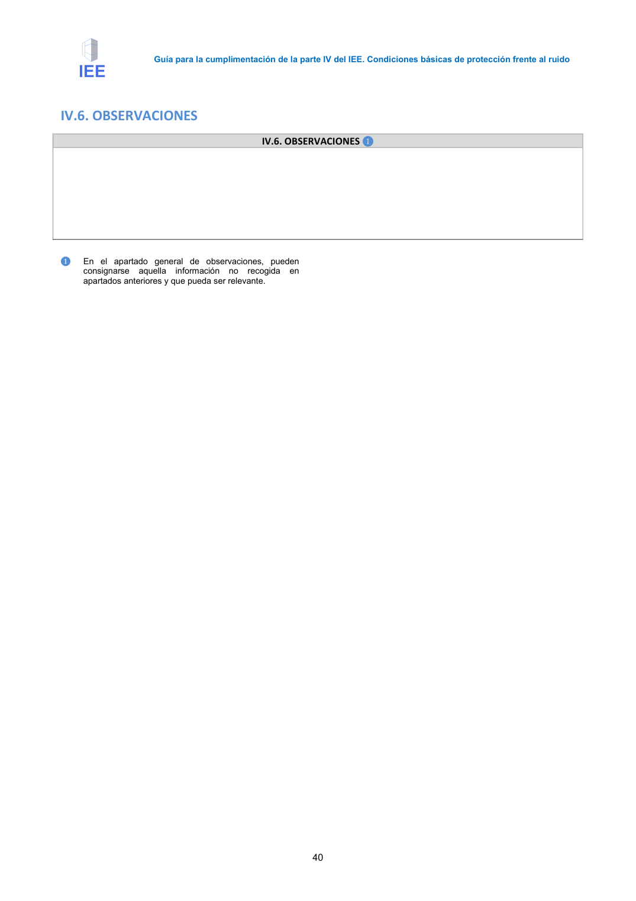

GUIA · IV.6. OBSERVACIONES · versión 2016-11-01 · capa guia
Formatos: JSON compacto · Markdown · PDF fuente
Ámbito del documento · texto del ámbito · documento y tablas
Tipo: tablas, figuras · nivel 3 · sección estimada: Anejo 3. Valoración del aislamiento acústico de elementos de separación horizontales y sus mejoras · padre: a0017
IV.6. OBSERVACIONES IV.6. OBSERVACIONES ❶ ❶ En el apartado general de observaciones, pueden consignarse aquella información no recogida en apartados anteriores y que pueda ser relevante. 41

PDF fuente redistribuible: copia fiel enlazada en esta página (SHA256 verificado).